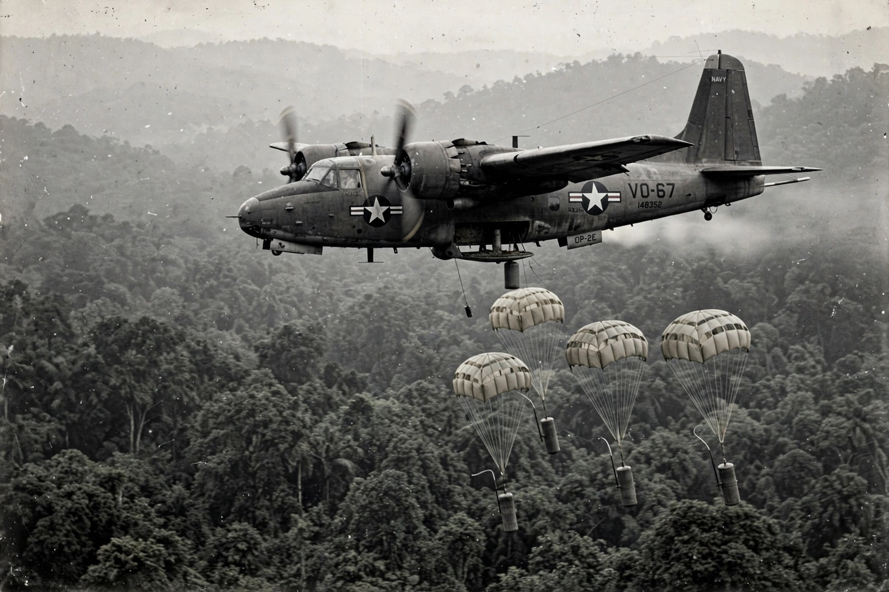

| Operation Igloo White | |
|---|---|
| Date | 1968–1972 |
| Location | Ho Chi Minh trail, Laos |
| Part of | Vietnam War |
| Type | Electronic surveillance / sensor warfare |
| Command center | Nakhon Phanom Royal Thai Air Force Base |

Operation Igloo White was a covert United States joint military electronic surveillance system used during the Vietnam War to interdict North Vietnamese and Viet Cong supply traffic along the Ho Chi Minh trail in Laos. Conducted from 1968 to 1972, it was the operational component of the wider McNamara Line concept championed by Secretary of Defense Robert McNamara.
The system grew out of the 1966 Jason Division summer study, which proposed an electronic barrier of sensors to detect enemy movement. Igloo White relied on thousands of air-dropped sensors — including ADSID seismic detectors, ACOUSID acoustic sensors, and Emsid devices — scattered along infiltration routes. Sensors were typically delivered by aircraft such as the OP-2E Neptune and A-1 Skyraider, their parachutes snagging in the jungle canopy so that spikes or antennas could register passing troops and vehicles.
Signals from the sensors were relayed by EC-121R "BatCat" aircraft orbiting overhead to the Infiltration Surveillance Center at Nakhon Phanom Royal Thai Air Force Base in Thailand. There, two IBM 360/65 computers processed the data, and analysts directed strike aircraft, including F-4 Phantoms and B-52s, onto detected targets. At its peak the program employed some 1,900 personnel at Nakhon Phanom alone.
The program cost roughly $1.7 billion to implement and more than $1 billion per year to operate by some estimates, making it one of the most expensive systems of the war. Air Force claims that Igloo White destroyed enormous numbers of enemy trucks were widely disputed; North Vietnamese forces developed countermeasures, including tape recorders playing false sounds and herds of animals triggering sensors. Igloo White nonetheless pioneered the "sensor-to-shooter" battlefield surveillance concepts that later became central to American precision warfare.
This article was recreated from memory as part of a web-reconstruction exercise.